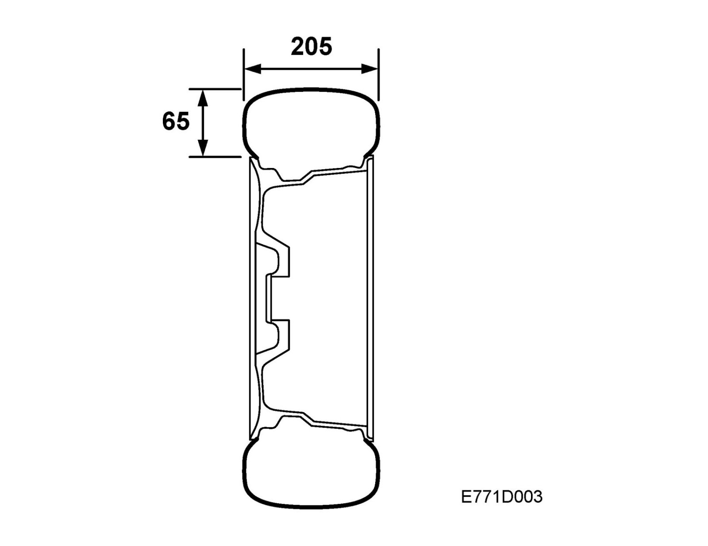
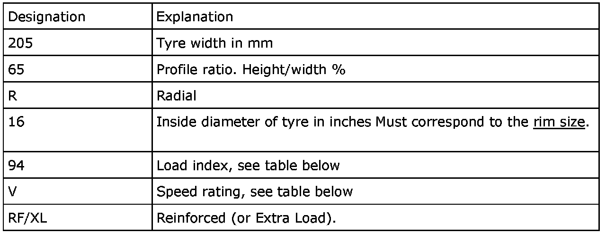
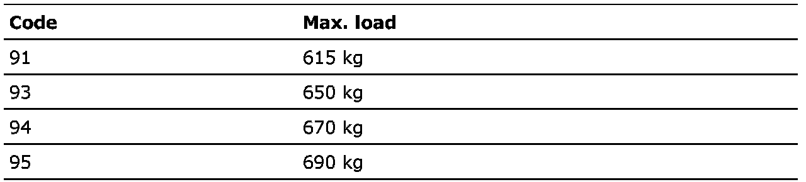
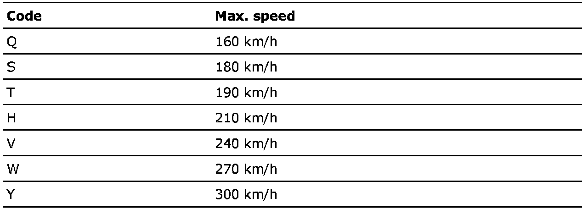

Tires: Description and Operation
Tires
The tires are the low profile type.
The dimensions of the tire are described in its designation as per the following table. Example: 205/65 R 15 94 V.

Load index

Speed rating

See also Tire dimensions and Recommended tire pressures.